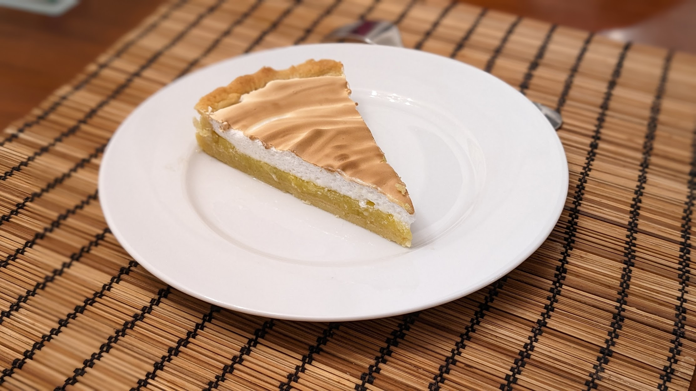

Tarte au citron

Pour une tarte (nourrissant 4 à 6 personnes) :
- Une pâte brisée, de préférence sucrée
- 4 citrons (on veut récupérer environ 400mL de jus ou un peu moins)
- Quatre œufs
- 150g de sucre semoule
- Une grosse cuillère à soupe de fécule de maïs
- Deux blancs d'œuf
- 100g de sucre glace
- (Facultatif) Une pincée de levure chimique
- Une pincée de sel
- Étaler la pâte brisée et la faire cuire à blanc à 180°C, environ 25 minutes (cf. instructions).
- Pendant ce temps, laver les citrons, en zester deux ou trois (en fonction de l'intensité de citron qu'on veut), et les presser pour récupérer le jus. Il ne faut surtout pas qu'il y ait de blanc dans le zeste.
- Mettre les zestes dans une casserole avec le jus de citron, le sucre semoule et la fécule de maïs. Faire chauffer à feu moyen.
- Battre les œufs dans un bol, et les rajouter dans la casserole. À partir de là, mélanger bien au fouet en continu, jusqu'à ce que ça épaississe bien. Prendre soin que ça n'attache pas.
- Lorsque le liquide commence à être bien épais, le verser sur le fond de tarte, et laisser refroidir complètement.
- Préchauffer le four à 150°C en utilisant le mode où la chaleur ne vient que du haut du four. Monter les blancs en neige ferme avec la pincée de sel.
- Ajouter le sucre glace et la levure si on en a, fouetter jusqu'à ce que ça redevienne ferme, et recouvrir la crème au citron de meringue.
- Enfourner environ 10 minutes vers le haut du four jusqu'à ce que la meringue dore ; surveiller en permanence pendant ce temps (ça passe de joliment doré à calciné en très peu de temps).
- Laisser refroidir un quart d'heure, déguster rapidement.
Remarque : pour éviter que la meringue ne retombe, c'est important de laisser complètement refroidir la tarte avant de la recouvrir de meringue. C'est aussi important de la déguster rapidement une fois qu'on a ajouté la meringue — si on pense avoir des restes et garder la tarte au frigo un jour ou deux, mieux vaut faire une meringue italienne, qui tiendra beaucoup mieux.